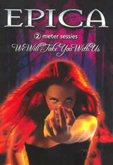

Entrevista
de Ad Slijter à Rosberg Lima
Olá pessoal, fico muito agradecido por fazermos esta entrevista. Para começar, fale-nos um pouco sobre o início da banda. Como tudo começou? Tudo começou quando o Mark pediu para deixar a sua banda anterior After Forever. Desde então nós escrevemos algumas músicas juntos, e durante um tempo nós procuramos outros músicos para formar esta nova banda.
Antes de o grupo se chamar Epica o nome era Sahara Dust. Por que a mudança? Bem, de fato foi um título de trabalho, nós não conseguimos achar um bom nome. Nós entramos em estúdio para gravar o debut album sem ao menos ter um nome.
Quem escolheu o nome Epica para intitular o grupo? E qual o motivo desta escolha? No estúdio encontramos o mais recente CD da banda Kamelot (que foi justamente gravado lá antes de nós), ele se chamava Epica. O nome era bom e também se ajustava com algumas de nossas letras, então nós decidimos ir com Epica.
Estive observando o gosto musical da banda e uma grande parte é bem parecido com o meu, principalmente quando se refere a Hans Zimmer. Eu gosto muito das trilhas sonoras que ele compõe. Eu sinto grande influência dele nas músicas do Epica, estou correto? Sim, nossa música teve muitas influências de Zimmer Metal.
Neste álbum estão contidas dez músicas sendo, seis delas gravadas em estúdio; três são acústicas e um bônus track. Qual motivo levou vocês a gravarem músicas em versão acústica neste disco? 2 meter sessies é um programa de rádio que convida banda para fazer um show acústico que será publicado. Quando nos pediram que fizéssemos o 2 meter sessies a idéia original também era fazer só algumas versões acústicas. Nossa gravadora veio, porém com a idéia de também registrar um vídeo como um bônus para um futuro DVD ou algo parecido. Esta idéia foi se tornando maior e maior, como nós também quisemos fazer uma apresentação elétrica e até mesmo com uma orquestra e coro. Deste modo, no fim nós temos a parte acústica e a parte elétrica ambas caracterizadas neste DVD e CD (o CD contém o mesmo material do DVD sem o vídeo).
Dentre as canções acústicas uma me chamou a atenção em especial: Memory (do musical Cats). A versão de vocês ficou ótima, eu confesso que fiquei surpreso com a escolha. Quem teve a idéia de inseri-la no disco We Will Take You With Us? A Simone veio com esta idéia, desde que ela também cantou esta canção em sua graduação na escola de música.
O Epica lançou o seu primeiro DVD há pouco tempo. Isso é um grande avanço para a banda apesar de pouco tempo de estrada. Vocês concordam? O que vocês acharam do resultado final deste DVD? Algumas pessoas nos pediram que pensássemos em um DVD. Mas como eu disse, não planejamos lançar imediatamente um DVD, da mesma maneira que não planejamos bônus no futuro DVD ou algo assim. Mas quando nós vimos o material nós o achamos tão bom que concordamos com a gravadora em lançá-lo.
Eu percebi que uma boa parte dos álbuns da banda sempre tem em sua capa a foto da Simone. Por quê? Bem ela é de fato "a face"
do Epica.
Nós não fizemos tudo de uma só vez. Primeiro nós gravamos bateria, daí nós tivemos duas semanas, então as guitarras, então nós ficamos uma semana fora etc. Eu penso que nós gravamos isto em dois meses, somando tudo.
Este é um álbum conceitual que fala sobre a cultura Maia. A cultura maia é realmente impressionante e a cada momento que você a estuda você fica mais atraído por ela. Vocês concordam? Por que o grupo escolheu a cultura Maia como tema deste disco? Bem, isso é o mesmo que aconteceu com o Mark. Ele estava tão inspirado nisto que escreveu algumas letras e terminou no mini conceito A New Age Dawns.
Quando analisamos a história da humanidade muitas vezes nos defrontamos com situações cuja explicação não é fácil a não ser que se saiba ler nas entrelinhas ou que se tenha conhecimento daquilo que ocorre nos bastidores e que, normalmente, só é do conhecimento de poucas pessoas. Só assim poderemos entender incongruências tremendas no comportamento de muitos povos. Vocês tiveram alguma dificuldade em escrever as letras ou até entender coisas da cultura Maia? Bem, às vezes você é um pouco confrontado. Eu às vezes sei que o Mark tem dificuldades, inclusive com a sua própria agenda. Mas assim como o resto do pessoal ele estava inspirado, assim, tudo fluiu naturalmente.
A civilização Maia primitiva era mais metafísica, mas no decorrer do tempo e à medida que aquela ia entrando em declínio, na medida em que o lado negativo da natureza foi ampliando o seu poder, começaram a surgir deuses objetivos. Qual a sua opinião sobre isto? Em minha opinião todo mundo nasce igual e deveria ser tratado da mesma maneira.
Dentre as músicas do álbum Consign To Oblivion, qual delas vocês preferem tocar? Por quê? Minha favorita é a faixa título, ela contém tudo do Epica e é uma das canções mais pesadas que nós fizemos; eu gosto dela.
A Simone, participou na gravação de uma música do Kamelot no disco chamado Epica. Como aconteceu este convite para participar da gravação? Isto foi bem natural, eles precisavam de uma vocalista no álbum novo, nós estávamos à procura de um vocalista, assim a negociação foi feita facilmente. Eu gosto muito de ambas as canções, o modo como elas saíram!
No Consign To Oblivion Roy Khan (vocal do Kamelot) participou da música Trois Vierges. A sua participação ficou ótima. Parece-me que vocês são bastante amigos, como vocês tiveram a idéia de chamá-lo para participar do álbum? Bem como eu disse, veio quase que naturalmente, assim eu realmente não tenho pensado em outras opções para ser honesto.
Esta pergunta vai para Mark, Ad Sluijter e Simone. Qual é a trilha sonora de Hans Zimmer favorita de cada um de vocês? Eu conheço bem o Mark e a Simone e diria "King Arthur". Eu adoro tudo dele. "The Rock", "Crimson Tide", "The Last Samurai", mas o melhor em minha opinião é o "Gladiator", eu me surpreendo toda vez quando eu escuto isto!
No ano de 2003 vocês lançaram o primeiro álbum The Phantom Agony, ele é muito bom. Qual foi o resultado obtido pela banda durante este lançamento? Para muitos de nós este foi nosso primeiro CD, assim nós ficamos muito felizes com o resultado final!
Vocês lançaram We Will Take You With Us em DVD e CD. Eu achei este material excelente (inclusive eu fiz o review dele). Mas, ao olhar a página oficial de vocês este álbum não está incluído na discografia oficial da banda, vocês não comentam sobre ele por ser um bônus CD que vem juntamente com o DVD? Bem inicialmente ele só seria lançado como uma versão dupla, DVD + CD, mas a gravadora também os lançou separadamente. Se nós tivéssemos que incluir toda "diferente" versão de um CD nós teríamos que ter um espaço maior no nosso site, porque já existem vários.
Bem, no mesmo ano do lançamento deste álbum outro disco foi lançado. The Score. O Epica costuma lançar materiais num curto período de tempo. Qual o motivo disto? The Score contém canções
que foram usadas num filme holandês. A idéia inicial
era lançar isto ao mesmo tempo do filme, que também
deveria ser lançado no mesmo período do CTO. Porém
o filme atrasou, assim nós adiamos isto. Quando o filme
atrasou mais um tempo nós não quisemos esperar
mais e lançamos isto.
No The Score estão contidas algumas faixas do álbum anterior Consign To Oblivion. Por quê? O material foi escrito no mesmo período do CTO. Nós também gostamos da idéia de trabalhar melodias em várias canções como um tipo de ligação entre os CDs normais do Epica e uma trilha sonora como esta.
Bem, vocês se apresentaram aqui no Brasil. Quais eram suas expectativas para esta apresentação? Existe alguma banda brasileira que vocês conheçam e gostem? Bem nós tivemos grandes expectativas desde que nós soubemos de muitas histórias "selvagens" de outras bandas. E claro que vimos todas as mensagens em nosso guest book que recebemos do Brasil. A tour foi grande, tudo era bem organizado, a multidão era fabulosa. Eu realmente estou ansioso pela próxima vez que tocaremos aí!
Defina o Epica em uma pequena frase. Eu e a banda estamos muito motivados, todos com muita vontade de trazer o Epica ao seu nível máximo.
Eu finalizo minha entrevista; obrigado pela oportunidade e espero ver vocês em breve aqui no Brasil. Por favor, deixe sua mensagem para todos os nossos leitores... Obrigado pelo
maravilhoso período que passamos e espero vê-los
em breve!
Extraída de www.metalrevolution.net
|
 Agora
eu vou falar sobre o maravilhoso álbum Consign To
Oblivion. Quanto tempo durou a gravação deste
álbum?
Agora
eu vou falar sobre o maravilhoso álbum Consign To
Oblivion. Quanto tempo durou a gravação deste
álbum?